Software
The Robinson lab develops a wide range of algorithms, computational resources, and applications. We use Java, Python, R, and occasionally C++, Perl, or Rust. We emphasize good software engineering practices in bioinformatics. This page provides an overview of some of the software or computational resources of the lab.
The Human Phenotype Ontology (HPO)
The Human Phenotype Ontology (HPO) aims to provide a standardized vocabulary of phenotypic abnormalities encountered in human disease. Terms in the HPO describe individual phenotypic abnormalities such as atrial septal defect. The HPO is developed as a part of the Monarch Initiative.
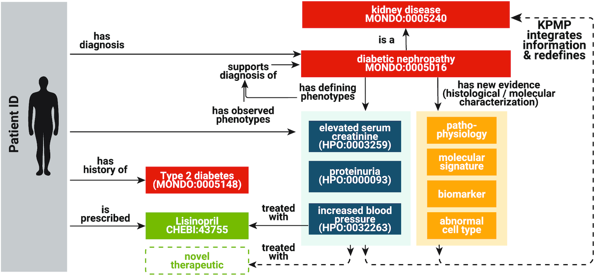
The Medical Action Ontology (MAxO)
the Medical Action Ontology (MAxO), the first ontology specifically designed to organize medical procedures, therapies, and interventions in a structured way. Currently, MAxO contains 1757 medical action terms added through a combination of manual and semi-automated processes.
The Global Alliance for Health (GA4GH) Phenopacket Schema
The Phenopacket Schema represents an open standard for sharing disease and phenotype information to improve our ability to understand, diagnose, and treat both rare and common diseases. A Phenopacket links detailed phenotype descriptions with disease, patient, and genetic information, enabling clinicians, biologists, and disease and drug researchers to build more complete models of disease. The standard is designed to encourage wide adoption and synergy between the people, organizations and systems that comprise the joint effort to address human disease and biological understanding.
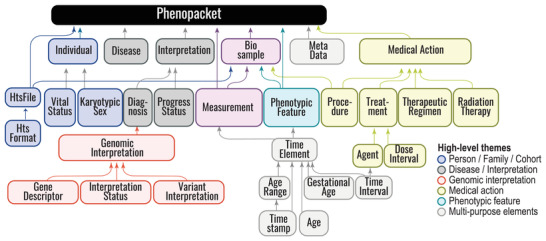
Phenopacket-Schema :material-github:
Phenopacket TOOLS :material-github:
Exomiser
The Exomiser is a Java program that functionally annotates and prioritises variants from whole-exome sequencing data starting from a VCF file. The Exomiser was developed by our group, Damian Smedley and Jules Jacobsen of the Mouse Informatics Group at the Sanger Institute (now at the 100,000 Genomes Project and Quenn Mary's University in London), and other members of the Monarch Initiative.
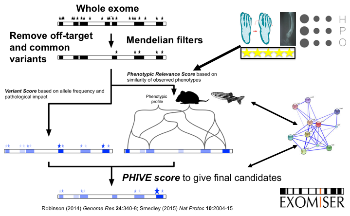
Phenomizer
The Phenomizer aims to help clinicians to identify the correct differential diagnosis in the field of human genetics. The user enters the signs/symptoms of the patient encoded as terms from the HPO. The software then ranks all diseases from OMIM, Orphanet, and DECIPHER by a score that reflects how well the phenotypic profiles of the patient and the disease match to each other.
- See also Kohler, S. et al., 2009
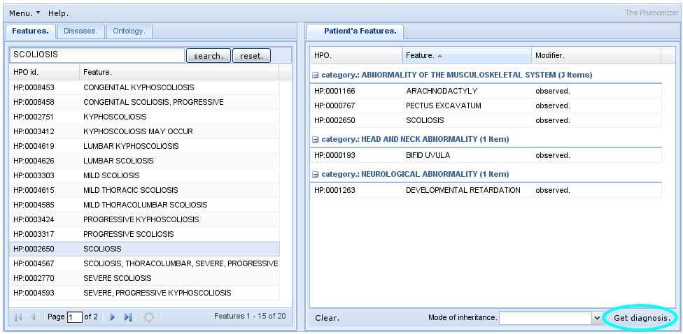
Phenol
Phenol is a Java library for working with JSON phenotype ontologies including especially the Human Phenotype Ontology and the Mammalian Phenotype Ontology and associate phenotype annotation files.
LIRICAL
LIkelihood Ratio Interpretation of Clinical AbnormaLities (LIRICAL) exploits the likelihood ratio (LR) framework to provide an estimate of (1) the posttest probability of candidate diagnoses, (2) the LR for each observed HPO phenotype, and (3) the predicted pathogenicity of observed genotypes.
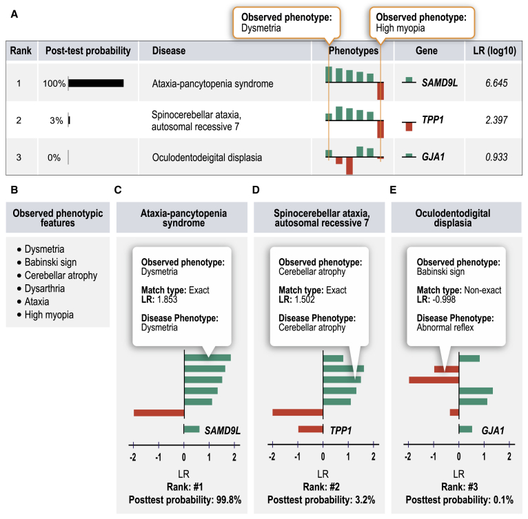
SQUIRLS
The Super Quick Information-content Random-forest Learning of Splice variants (SQUIRLS) algorithm generates a small set of interpretable features for machine learning by calculating the information-content of wild-type and variant sequences of canonical and cryptic splice sites, assessing changes in candidate splicing regulatory sequences, and incorporating characteristics of the sequence such as exon length, disruptions of the AG exclusion zone, and conservation.
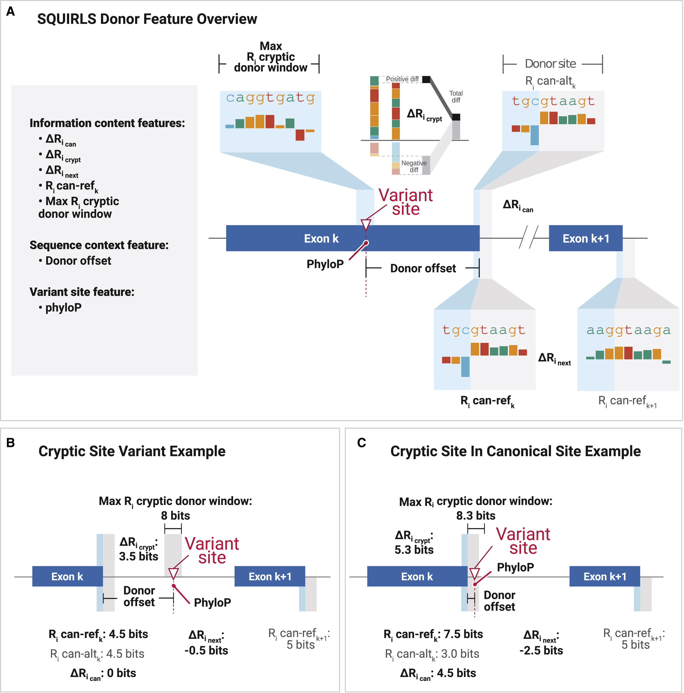
SvAnna
Structural variants (SVs) are implicated in the etiology of Mendelian diseases but have been systematically underascertained owing to sequencing technology limitations. Long-read sequencing enables comprehensive detection of SVs, but approaches for prioritization of candidate SVs are needed. Structural variant Annotation and analysis (SvAnna) assesses all classes of SVs and their intersection with transcripts and regulatory sequences, relating predicted effects on gene function with clinical phenotype data.
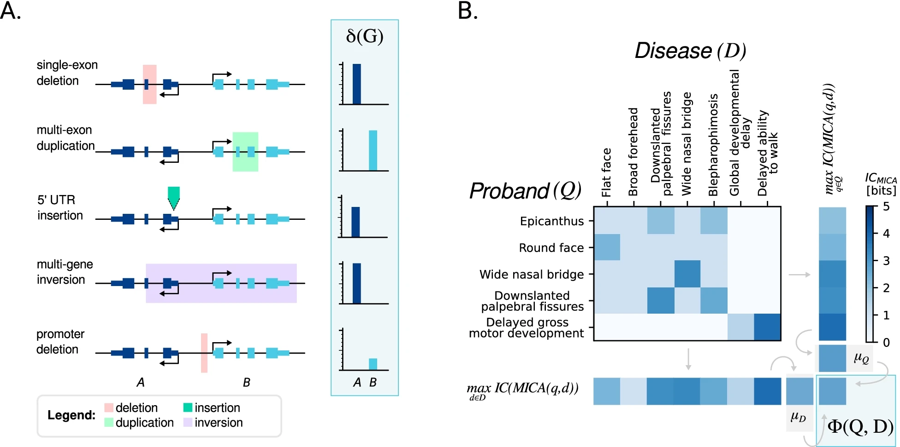
ChIP-seq software
Chromatin immunoprecipitation coupled with next-generation sequencing (ChIP-seq) is a powerful technology to identify the genome-wide locations of transcription factors and other DNA binding proteins. Computational ChIP-seq peak calling infers the location of protein-DNA interactions based on various measures of enrichment of sequence reads. Our algorithm, Q, uses an assessment of the quadratic enrichment of reads to center candidate peaks followed by statistical analysis of saturation of candidate peaks by 5' ends of reads. We show that our method not only is substantially faster than several competing methods but also demonstrates statistically significant advantages with respect to reproducibility of results and in its ability to identify peaks with reproducible binding site motifs.
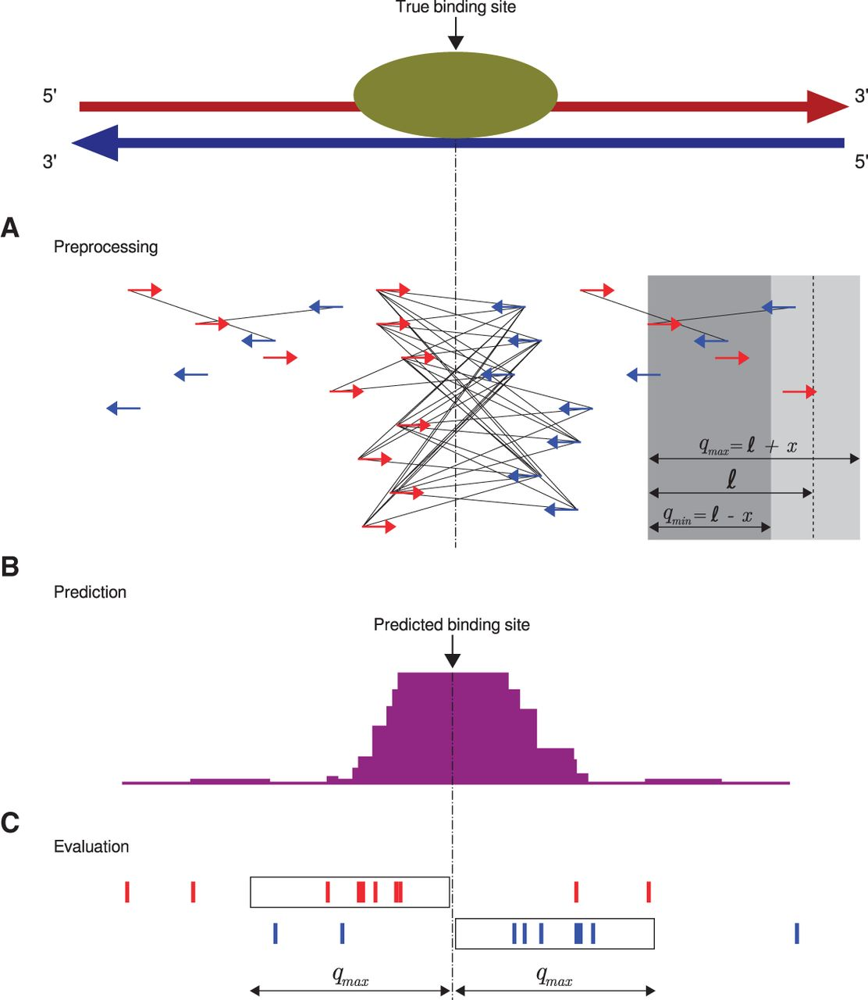
GOPHER
Target enrichment combined with chromosome conformation capturing methodologies such as capture Hi-C (CHC) can be used to investigate spatial layouts of genomic regions with high resolution and at scalable costs. A common application of CHC is the investigation of regulatory elements that are in contact with promoters, but CHC can be used for a range of other applications. GOPHER (Generator Of Probes for capture Hi-C Experiments at high Resolution) is an easy-to-use and robust desktop application for CHC probe design
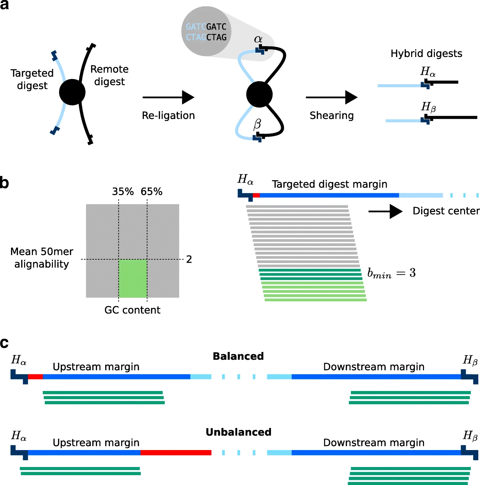
HBA-DEALS
Hierarchical Bayesian Analysis of Differential Expression and ALternative Splicing (HBA-DEALS) is an R package that simultaneously characterizes differential gene expression and alternative splicing in high-throughput gene expression data. It uses counts data for isoforms (alternative transcripts of a gene) to infer the parameters of a hierarchical Bayesian model of expression and splicing. It then uses the posterior of the parameters to determine the existence of differential expression and/or differential alternative splicing. Isoform counts can be derived from short-read sequencing RNA-Seq data or from long-read RNA sequencing data such as that generated by the PacBio SequelII platform.
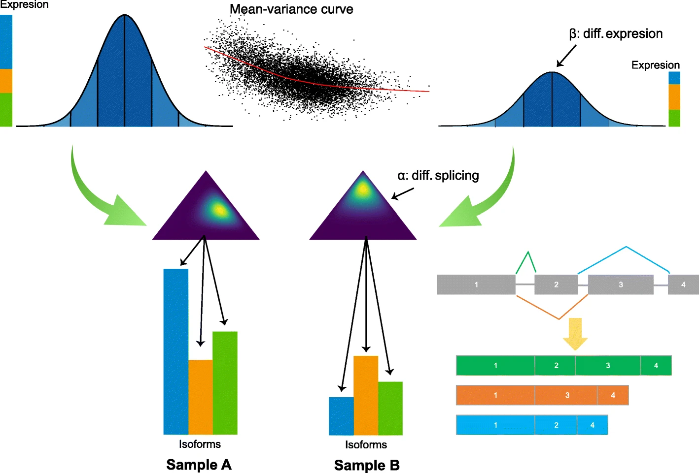
isopret
isopret (isoform interpretation) is a method that uses expectation–maximization to infer isoform-specific functions based on the relationship between sequence and functional isoform similarity. We predicted isoform-specific functional annotations for 85 617 isoforms of 17 900 protein-coding human genes spanning a range of 17 430 distinct gene ontology terms.
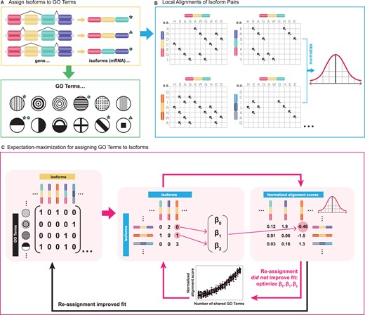